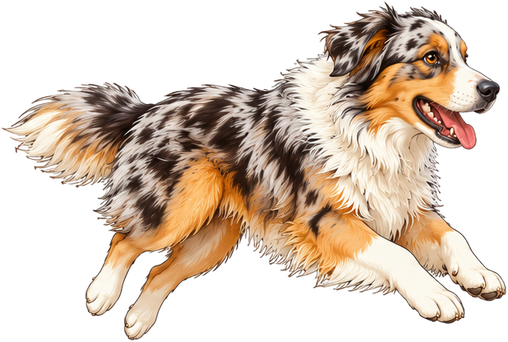
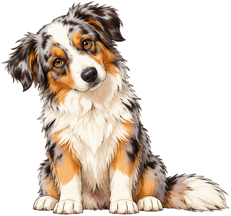
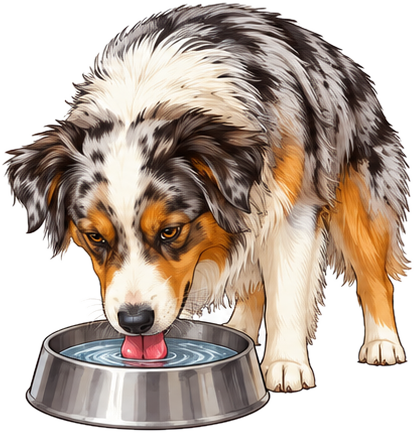

Gesundheits-Check
Trinkt dein Hund genug?
Die Faustregel
50 ml pro Kilo, jeden Tag.
*schlabber*
Richtwert · Bedarf schwankt mit Futter und Wetter
Rechenbeispiel
So viel braucht ein 20-kg-Hund.
20 kg
× 50 ml
= 1 Liter
1 L
Wichtig
Bei Hitze und Sport: mehr.





trinkt dein hund eigentlich genug?
als faustregel gelten 50 ml
pro kilo körpergewicht, jeden tag
ein hund mit 20 kilo
braucht also etwa einen liter
bei hitze und sport mehr
Folgen für mehr Hundewissen

HundeWissenTv